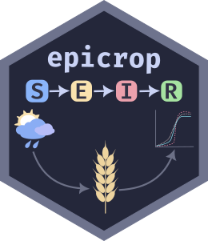

Memoised Fast Interpolation with Content-Based Hashing
Source:R/interpolation.R
dot-memo_fast_interp_approx_digest.RdA memoised version of .fast_interp_approx_internal() that caches results
based on content hashing. Enables efficient reuse when the same lookup
tables and x-coordinates recur across multiple function calls, even if
the objects are reconstructed.
Caching Strategy
Instead of caching by object identity (memory address), this function:
Converts
mat(matrix) to numeric vector and computes SHA1 hash viadigest::digest()Converts
xout(output x-coords) to numeric vector and computes SHA1 hashUses combined hash as memo key
On cache hit, returns cached result directly
On cache miss, calls
.fast_interp_approx_internal()and caches result
This approach enables cross-call reuse even when matrices and vectors are reconstructed (new objects with same values).
Performance
When to use:
Same lookup tables repeated across multiple
seir()runsSame disease models run on many locations/dates
Interpolation involves large x-coordinate grids
When not worth it:
One-off calls or unique matrices each time
Very small matrices/xout (hashing overhead dominates)
Real-time systems with strict latency requirements
Hashing typically costs 1-10 microseconds per call. Interpolation itself is already very fast (~1 microsecond). Cache hit saves ~1 microsecond but costs 1-10 microseconds in hashing.
Limitations
Memo cache grows unbounded (no size limit by default)
Not thread-safe with default
memoise::memoise()settingsHash collisions (SHA1) extremely rare but not impossible
Cache persists for session lifetime; restart R to clear
See also
memoise::memoise()for memoisation mechanics and cache controldigest::digest()for content-based hashing algorithm (SHA1 by default).fast_interp_approx_internal()for underlying interpolationstats::approx()for comparison (non-memoised, R's standard interpolation)
Examples
# Example 1: Repeated interpolation with same lookup table
RcA <- rbind(c(0, 0.05), c(60, 0.6), c(120, 0.6))
# First call: computes and caches
age_vec1 <- 0:119
result1 <- .memo_fast_interp_approx_digest(RcA, age_vec1)
#> Error in .memo_fast_interp_approx_digest(RcA, age_vec1): could not find function ".memo_fast_interp_approx_digest"
# Second call: same matrix, same xout -> cache hit (fast)
age_vec2 <- 0:119
result2 <- .memo_fast_interp_approx_digest(RcA, age_vec2)
#> Error in .memo_fast_interp_approx_digest(RcA, age_vec2): could not find function ".memo_fast_interp_approx_digest"
identical(result1, result2) # TRUE
#> Error: object 'result1' not found
# Third call: same matrix, different xout -> cache miss (recomputes)
age_vec3 <- 0:100
result3 <- .memo_fast_interp_approx_digest(RcA, age_vec3)
#> Error in .memo_fast_interp_approx_digest(RcA, age_vec3): could not find function ".memo_fast_interp_approx_digest"
length(result3) # 101 (different from result1)
#> Error: object 'result3' not found
# Example 2: Demonstrate content-based caching
# Reconstructed matrix with same values -> cache hit
RcA_reconstructed <- rbind(c(0, 0.05), c(60, 0.6), c(120, 0.6))
# Same xout as result1
result4 <- .memo_fast_interp_approx_digest(RcA_reconstructed, 0:119)
#> Error in .memo_fast_interp_approx_digest(RcA_reconstructed, 0:119): could not find function ".memo_fast_interp_approx_digest"
identical(result1, result4) # TRUE (content same, so cache hit)
#> Error: object 'result1' not found